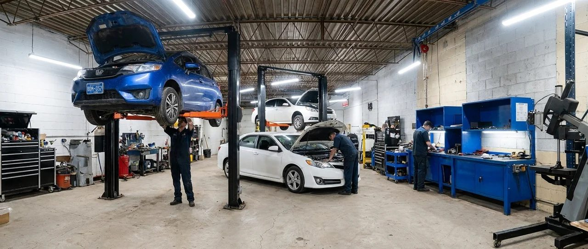
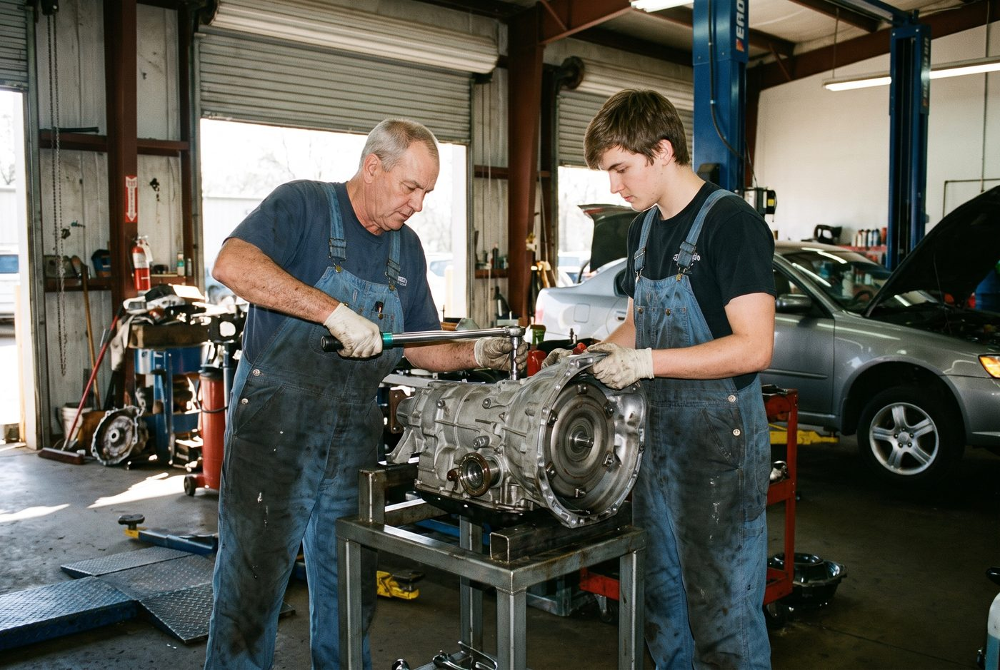

Transmission Maintenance & Service
Routine inspections and preventive maintenance that catch small issues before they become expensive repairs.
- Fluid & filter changes
- Fluid level & condition checks
- Preventive inspections
Local experts. Fast response.
Quick turnaround. Back on the road sooner.
Experience with a wide range of vehicles.
No pressure. Just quality you can trust.
Routine inspections and preventive maintenance that catch small issues before they become expensive repairs.
Targeted repairs for slipping, hard shifting, leaks, and other transmission problems, diagnosed before any work begins.
CVTs are high-demand and prone to failure. We diagnose and repair CVT units that many other shops turn away.
Full computer scan and live data analysis to pinpoint the exact cause of a shifting or electronic fault.
Seal, gasket, and pan repairs to stop fluid leaks and protect your transmission from damage.
Complete teardown and rebuild with new internals, torque-checked and bench-tested before reinstall.
At Jack Wen Transmission Inc., transmissions are what we do. For over 30 years, we've been helping drivers throughout the Greater Toronto Area and surrounding communities diagnose and repair transmission problems and get confidently back on the road.
Our experienced team specializes in transmission diagnostics, repairs, complete rebuilds, maintenance, and replacement units for a wide range of cars, SUVs, vans, and trucks.
Schedule an Appointment

Jack Wen Transmission started with one mechanic, one bay, and a simple standard: fix it right the first time. Every rebuild that leaves our shop gets the same attention we'd give our own vehicle.
We've grown by referral, not advertising, because a transmission shop is only as good as the last job it did. That's still how we measure ourselves today.
Learn More About UsGet in touch with us today. We're here to help with all your transmission needs.
(647) 553-1530 • JACKWENTRANSMISSION@GMAIL.COMIf you have any other questions, don't hesitate to reach out. We're here to help!
Watch for delayed or rough shifting, slipping between gears, unusual noises, burning smell from the fluid, or a check engine light. Any of these are worth a diagnostic before they get worse.
Most vehicles need a fluid change every 50,000 to 100,000 km, but it varies by make, model, and driving conditions. Check your owner's manual or ask us to check your specific interval.
It depends on the extent of the damage, your vehicle's age and value, and cost comparison. We'll walk you through both options with real numbers before any work starts.
Yes, every rebuild comes with a written 6 months / 25,000 km parts and labor warranty, standard. We guarantee our service and work, and extended coverage up to 5 years / 250,000 km is available for added peace of mind.
Yes, every visit starts with a free, no-obligation diagnosis. We identify the problem and explain your options before any work ever begins.
Stop by and see us. We're ready to take care of your transmission.
Our hours of operation are Monday to Friday, 9 AM to 6 PM. We are closed on Saturdays and Sundays.